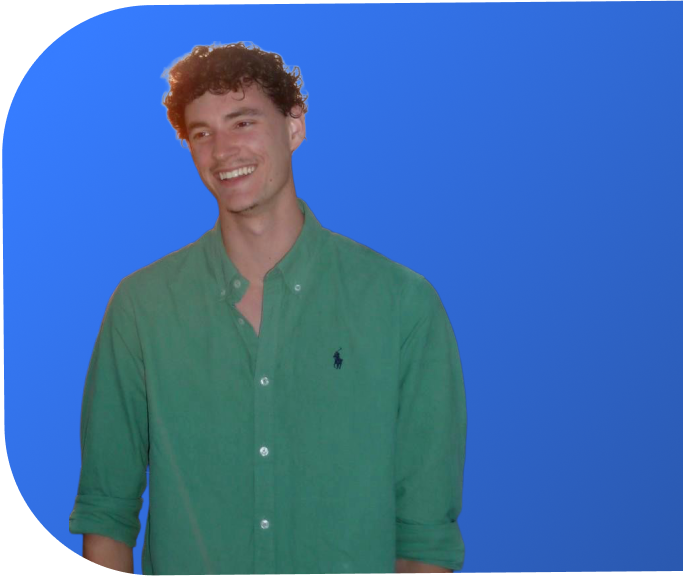
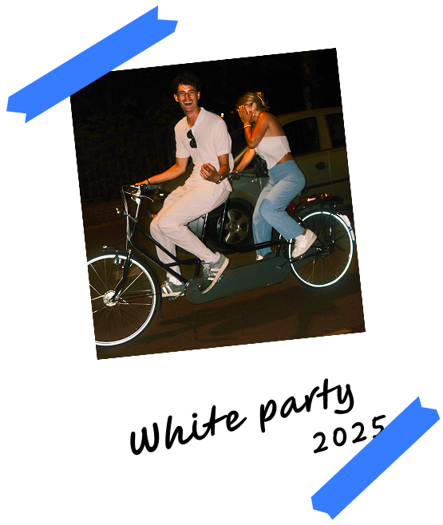

I AM A CREATIVE
IOS APP DEVELOPER
My name is Lucas van Kempen, I am 23 years old and have a passion for creative (ICT) work. Check my portfolio to see what I can do!


About me
In 2019, I started at SintLucas Audiovisual & Animation, where I discovered my passion for creative digital work. There, I was introduced to animation, which I later turned into client work. After finishing SintLucas, I went to Fontys ICT, where I was introduced to other creative expressions, such as web development and branding design. Only very recently, I started a new direction within the ICT program called “App Development.” I think I have found a good place here, since it combines my interest in creative and technical work into one. I also have a passion for entrepreneurship, which I can pursue with this as well. I am currently working on an app concept that I may want to turn into a side hustle called TastePoints. I want to learn much more about app development in general, and gain experience working in the real world outside of school.
Projects
Instead of adding as many projects as I could, I chose the three most important ones that show my creativity. I wanted there to be more in the app development part, but I only started doing that this semester. I am eager to learn more about it in the future.


Skills